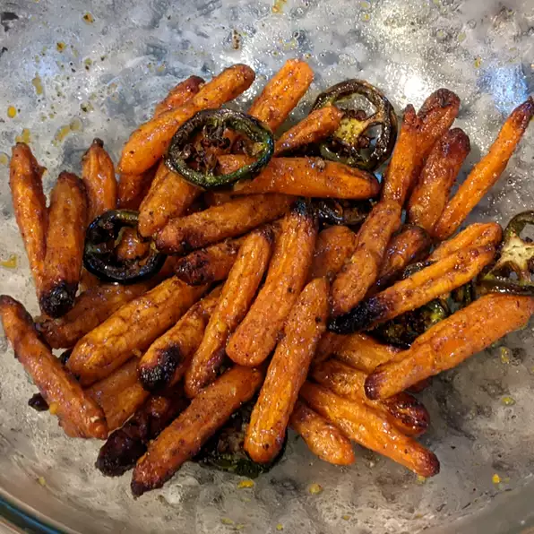

Air Fryer Sweet and Spicy Roasted Carrots

Description
Healthy snacks you can make using air fryer
Ingredients
- 1 serving cooking spray
- 1 tablespoon butter, melted
- 1 tablespoon hot honey (such as Mike's Hot Honey®)
- 1 teaspoon grated orange zest
- ½ teaspoon ground cardamom
- ½ pound baby carrots
- 1 tablespoon freshly squeezed orange juice
- 1 pinch salt and ground black pepper to taste
Steps
- Preheat an air fryer to 400 degrees F (200 degrees C). Spray the basket with nonstick cooking spray.
- Combine butter, honey, orange zest, and cardamom in a bowl. Remove 1 tablespoon of the sauce to a separate bowl and set aside. Add carrots to the remaining sauce and toss until all are well coated. Transfer carrots to the air fryer basket.
- Air fry until carrots are roasted and fork tender, tossing every 7 minutes, for 15 to 22 minutes. Mix orange juice with reserved honey-butter sauce. Toss with carrots until well combined. Season with salt and pepper.